FuzzBench: brain08-nov21-cksum report
(experiment incomplete/still running...)
warning
Please consider this as a preliminary report to
demonstrate the capabilities of FuzzBench. While we have
tried our best, we have not confirmed that we configured
everything correctly. We are hoping to work together
with the community to validate results and improve the
set of fuzzers, benchmarks, and their configurations in
the future.
See FAQ
for more details.
experiment summary
We show two different aggregate (cross-benchmark) rankings of fuzzers. The first is based on the average of per-benchmarks scores, where the score represents the percentage of the highest reached median coverage on a given benchmark (higher value is better). The second ranking shows the average rank of fuzzers, after we rank them on each benchmark according to their median reached covereges (lower value is better).By avg. score
| average normalized score | |
|---|---|
| fuzzer | |
| afldark_optimize_cksum | 100.00 |
| afldark_dev | 99.97 |
By avg. rank
| average rank | |
|---|---|
| fuzzer | |
| afldark_optimize_cksum | 1.17 |
| afldark_dev | 1.83 |
-
Critical difference diagramThe diagram visualizes the average rank of fuzzers (second ranking above) while showing the significance of the differences as well. What is considered a "critical difference" (CD) is based on the Friedman/Nemenyi post-hoc test. See more in the documentation.
Note: If a fuzzer does not support all benchmarks, its ranking as shown in this diagram can be lower than it should be. So please check the list of supported benchmarks for the fuzzer(s) of your interest. The list could be specified in the fuzzer's README.md like this.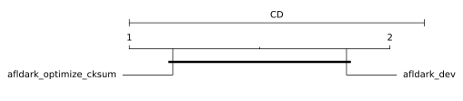
-
Median coverages on each benchmark
fuzzer afldark_optimize_cksum afldark_dev benchmark bloaty_fuzz_target 7219 7215 libpng-1.2.56 1510 1510 openthread-2019-12-23 5179 5177
bloaty_fuzz_target summary
Ranking by median reached coverage
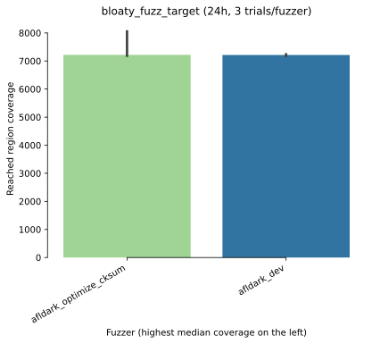Reached coverage distribution
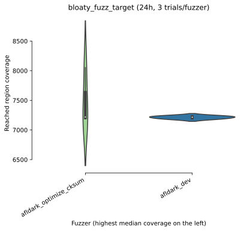Mean coverage growth over time
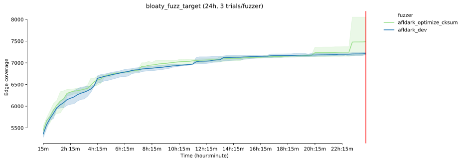Mean coverage growth over time
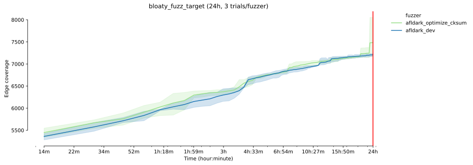
* The error bands show the 95% confidence interval
around the mean coverage.
-
Sample statistics and statistical significance
Coverage sample statistics
count mean std min 25% median 75% max fuzzer time afldark_optimize_cksum 86400 3.0 7486.666667 491.58553 7187.0 7203.0 7219.0 7636.5 8054.0 afldark_dev 86400 3.0 7212.666667 25.57994 7186.0 7200.5 7215.0 7226.0 7237.0
Mann-Whitney U test 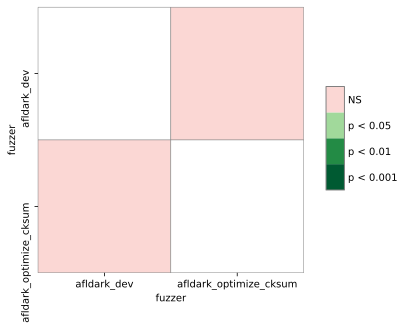 The table summarizes the p values of pairwise Mann-Whitney U tests. Green cells indicate that the reached coverage distribution of a given fuzzer pair is significantly different.
libpng-1.2.56 summary
Ranking by median reached coverage
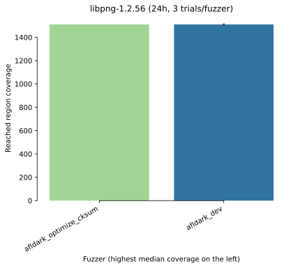Reached coverage distribution
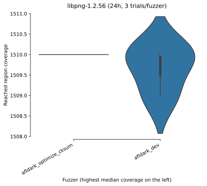Mean coverage growth over time
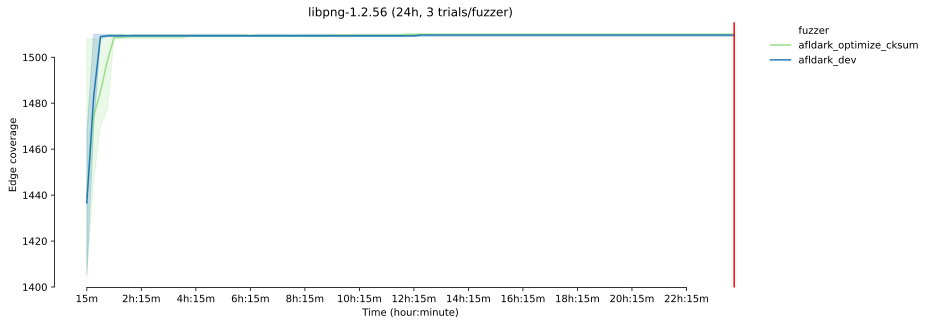Mean coverage growth over time
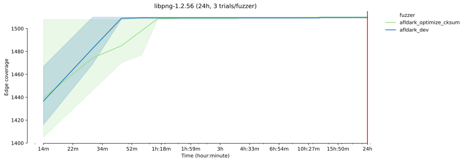
* The error bands show the 95% confidence interval
around the mean coverage.
-
Sample statistics and statistical significance
Coverage sample statistics
count mean std min 25% median 75% max fuzzer time afldark_dev 86400 3.0 1509.666667 0.57735 1509.0 1509.5 1510.0 1510.0 1510.0 afldark_optimize_cksum 86400 3.0 1510.000000 0.00000 1510.0 1510.0 1510.0 1510.0 1510.0
Mann-Whitney U test
 The table summarizes the p values of
pairwise Mann-Whitney U tests.
Green cells indicate that the reached
coverage distribution of a given fuzzer pair
is significantly different.
The table summarizes the p values of
pairwise Mann-Whitney U tests.
Green cells indicate that the reached
coverage distribution of a given fuzzer pair
is significantly different.
openthread-2019-12-23 summary
Ranking by median reached coverage
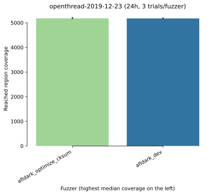Reached coverage distribution
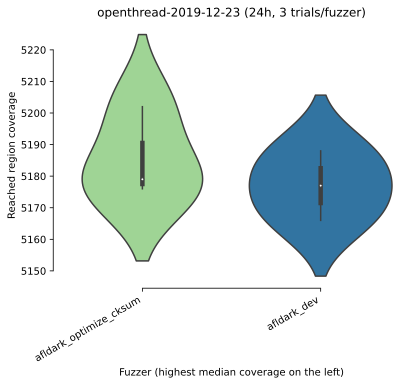Mean coverage growth over time
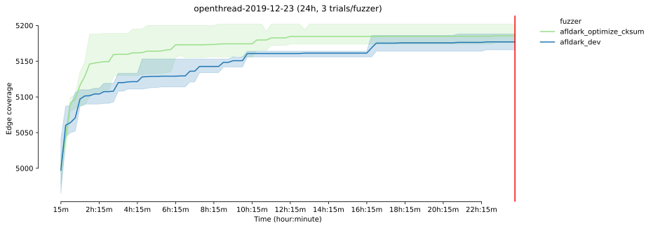Mean coverage growth over time
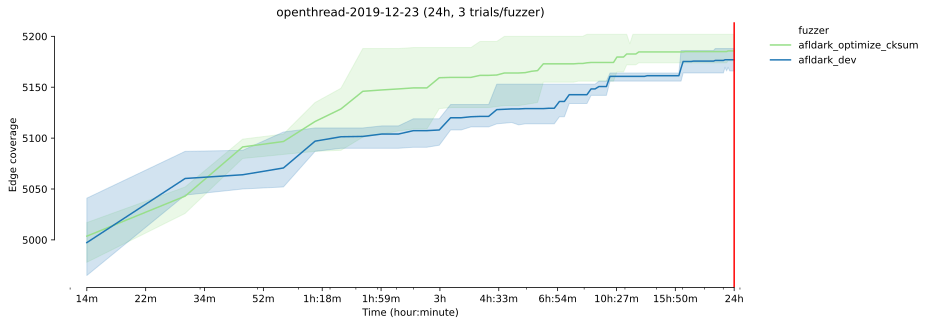
* The error bands show the 95% confidence interval
around the mean coverage.
-
Sample statistics and statistical significance
Coverage sample statistics
count mean std min 25% median 75% max fuzzer time afldark_optimize_cksum 86400 3.0 5185.666667 14.224392 5176.0 5177.5 5179.0 5190.5 5202.0 afldark_dev 86400 3.0 5177.000000 11.000000 5166.0 5171.5 5177.0 5182.5 5188.0
Mann-Whitney U test The table summarizes the p values of pairwise Mann-Whitney U tests. Green cells indicate that the reached coverage distribution of a given fuzzer pair is significantly different.
experiment data
You can download the raw data for this report here.Check out the documentation on how to create customized reports using this data. Also see some example Colab notebooks for doing custom analysis on the data here.
The experiment was conducted using this FuzzBench commit: 8149d744a4965c216501a0ab612f711f850563e7
Experiment Description:
(None,)